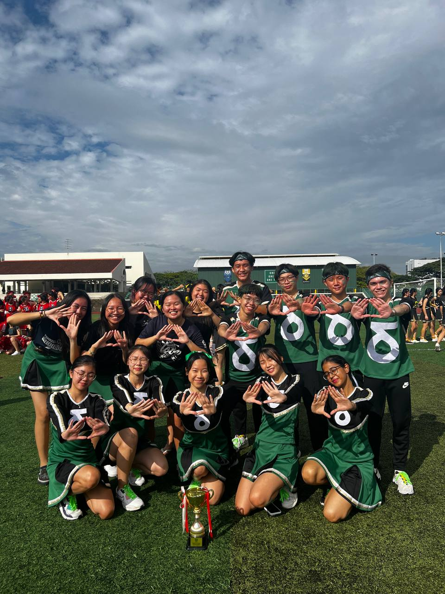
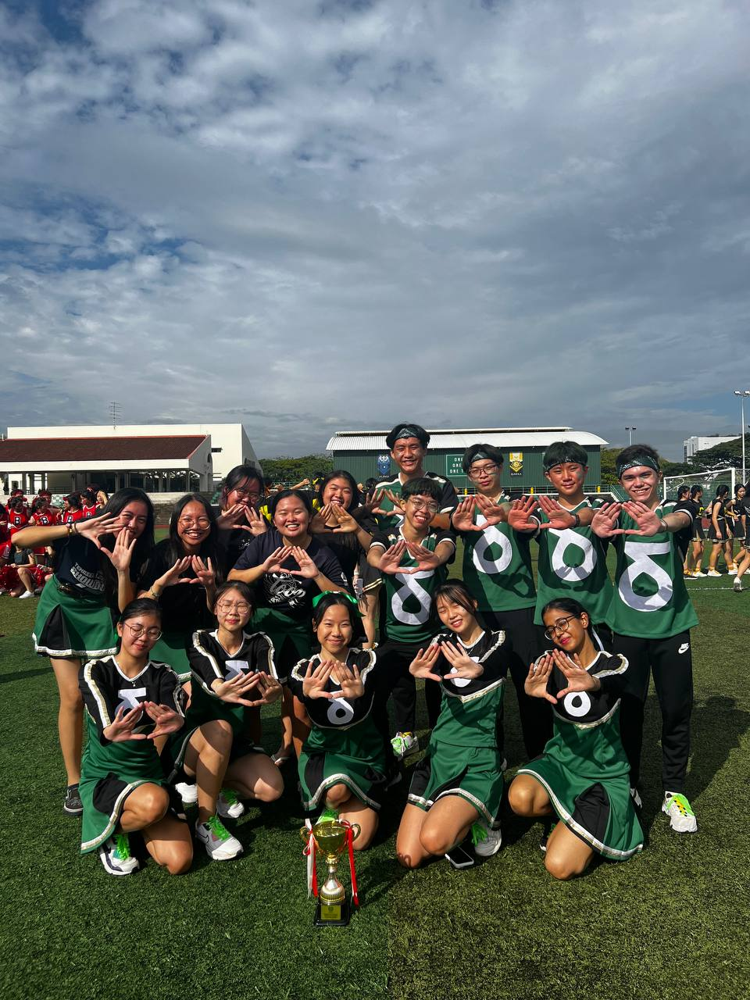

Bio
Hi! Meet the 18 years-old boy from a small town in Malaysia -- Dickson! Originated from Penang, Malaysia, the home to many delicacies and cuisines, I was awarded ASEAN Scholarship to study in Singapore since 2022. With a passion for personal development, I actively participate in enrichment activities and grab every opportunity to develop my skills and abilities, striving to become a well-rounded person. Here is a brief list of my TJ Journey!
Commitment
CCA: Modern Dance Club
Exco Position: Secretary
Being part of the Modern Dance Club has been a rewarding experience for me. I was exposed to various dance genres, such as contemporary, jazz and hip hop, and learned to appreciate the diversity and beauty of movement. Dancing was also an avenue for me to relieve my stress and express myself creatively. I enjoyed the time spent with my fellow dancers, who were supportive and inspiring. We worked hard together to showcase our skills and passion in our bi-annual conert, 'REVERIE' and thanks to that, I gained the opportunity to perform several times in front of my cohort during school events. The time spent learning new dances, laughing, chilling in dance studio is definitely an indelible memory for me that will live rent-free forever in my head.
I am able to hone my leadership skills through carry out the duty of a Secretary in the club. I learnt important organising skills and coordinating skills when planning out activity schedule, and releasing announcement to members to ensure clarity in the message delivered. If I were to sum up my feelings for it, it would say I am forever grateful for the chance to be part of this amazing club.
Delta House Cheerleading Team
Won the 2023 TJC Cheer Competition
Ask me one thing that I remembered the most from my JC life, it would be the memories that I made with my fellow "Cheerios". We laugh, we support each other while we devoted ample time and effort to train with dilligence. Being a part of the team has allowed me to not only hone my dance skills but also develop essential life skills. I have learned to collaborate efficiently with my team members, tackle unforeseen challenges calmly, and adapt to various situations promptly. Through my participation in the Cheerleading Team, I have experienced personal growth as both a dancer and an individual. I look forward to continuing my journey of learning and self-improvement through my passion for dance.
 

Experience
Carpe Diem. I seize the opportunities to explore and take on different roles in various activities. Throughout the journey, everything taught me something, I picked up knowledge from every small step I made, and that made who I am today.
Defy Camp 2023: 躍飛 - Facilitator
Lead. Defy our limit. Rise to the ocassion. These are the three key takeaways for me from this camp. It's truly a wholesome series of programme where I step up as a group facilitator for the first time. It was a great opportunity to learn how to lead a group of campers, make quick decisions in response to unexpected events and keep them entertained with fun activities. I realised how strong one's resilience, both physical and mental, can be if we are determined to do something as we all successfully walked 25km in one night to raise funds and food supplies for needy families in the community, something that we never imagined to be attainable before. It is this challenge that taught me to be braver and more confident in facing difficulties in life. Defy Camp was a rewarding and enriching experience that I will never forget.
Orientation 2023: Legacy - Facilitator
During Orientation 2023, I had the opportunity to forge new friendships with other facilitators and the incoming juniors. I also enjoyed giving a warm welcome and support to the new students who were joining our campus. I wanted them to feel comfortable and excited about their academic journey. I also tried to hype up the school spirit by leading cheers, games and activities that showcased our values and culture. I see orientation as an important 'ritual' to pass on our legacy to the new blood who will carry on our traditions and achievements.

Self-Initiated Learning: Digital Drawing
I always have a passion for art-related work, especially drawing. In fact, I started learning digital drawing back in 2020 when COVID-19 start, and to document my art journey, I actually have an Instagram account (You can see it here ) dedicated to post my artwork! However due to increasing academic workload, I have stopped updating since January 2022. Reluctant to leave my digital drawing skills to rust, I decided to devote part of my time in Home-Based Learning(HBL) day to enhance my digital drawing skills and continue my experiment with different techniques to develop my personal style! These are a few recent artworks that I'm proud of.
'An Irritating Phone Call', 2022.

'The Girl In A Bob', 2022.
'Validation From Comparison', 2022.
Self-Initiated Group: Kpop Dance Performance Group
I have always been passionate about Kpop and dancing, so when I heard about the TJ Carnival is opening for performance sign-up, I decided to take the initiative and form a dance group with some of my friends who shared the same interest. We had to balance our academic work and our practice sessions, which was not easy. We also had to create our own choreography from scratch, which involved a lot of planning, teaching and coordination. Despite the challenges, we managed to meet up weekly for practice. It turns out to be a successful performance which received a lot of positive feedback from the audience. To us, that was the best 5 minute on stage we ever had this year. Gaining support from our cohort, our group went on to perform on Graduation Night as well with a whole new set of choreography! This is indeed an unforgettable part of memory in my JC dance journey. <3 (Updated on 15 Dec)
Advisory Mentorship Programme
I am very grateful to have participated in this mentorship programme as a mentee. It was a valuable opportunity to connect with a professional software engineer, Steven Khong, who shared his insights and experiences in the IT field. Through this programme, I gained more exposure towards the career that I'm interested in and learned much about the expectations and requirements of skills in this industry. I also received helpful feedback and guidance from Mr. Khong, which helped me to have a clearer vision of my future directions and inspired me to develop related skills in developing a software.
TJC Chinese Essay Writing Competition - Gold
I have always love the sophisticated and beautiful Chinese language, which has enabled me to effectively communicate my thoughts and ideas in Chinese. Through my love for the language, I have been able to achieve many accomplishments, including winning the Chinese Essay Competition in my school. I take great pleasure in expressing myself through this beautiful language and have spent countless hours improving my proficiency in it. My passion for the Chinese language has not only helped me succeed academically but also enriched my personal life by allowing me to connect with people from different cultures and backgrounds. I am grateful for Chinese as it allowed me to have a deeper appreciation for language and see things from a different perspective.
Other Achievements/Experience:
- TJC ACE Award
- Whitehack CTF Competition - Writeup Award
- Jit Sin High School Character Building Camp: Facilitator
- TDSS - Facilitator
- AISG Student Group
- YFC Team Nirvana - Volunteer for Designer Team
- Artitude Event Overall I/C
- TJC Talent Development Programme - Member
- H3 Mathematics
... and that's pretty much all about me! It has been a fruitful, memorable, and thrilling experience to study overseas. Sometimes, it can be quite daunting. Nonetheless, I look forward for what's coming next and always prepare to face whatever challenges that's waiting ahead. Bye for now!